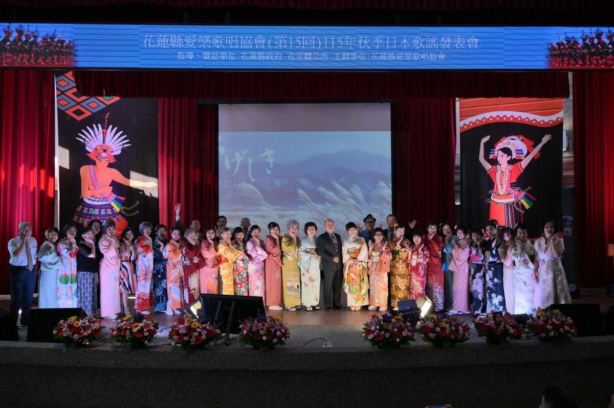

吉安愛樂日本歌謠研習發表成果 游淑貞鼓勵全齡多元學習樂活吉安

可樂電子報小編/編輯
花蓮縣愛樂歌唱協會今（31）日於吉安鄉阿美文化館舉辦「115年秋季（第15回）日本歌謠研習成果發表會」，共有55位會員輪番登台獻唱，展現長年勤練的歌唱實力與舞台魅力，吸引200餘位民眾到場聆聽，現場掌聲不斷、氣氛熱絡。吉安鄉長游淑貞肯定會員展現「活到老學到老」樂於學習的精神，盼透過多元藝文活動，豐富鄉親生活，營造優質樂活的社區環境。

花蓮縣愛樂歌唱協會理事長林肇輝表示，感謝花蓮縣政府及吉安鄉公所長期支持協會推廣日本歌謠，讓更多民眾有機會接觸多元音樂文化。本次發表會也是協會今年度第二場大型日本歌謠成果展演，活動首次運用優化後的場館設備，結合大型LED電視牆與舞台燈光設計，提升整體視聽效果。

本次活動的一大亮點，是每首歌曲演唱時，舞台背景螢幕同步呈現原聲原影卡拉OK畫面及歌詞，讓現場觀眾能隨著旋律欣賞歌詞意境、跟著旋律哼唱，成為一場結合歌唱、文化與視覺藝術的音樂饗宴。演出會員各個盛裝登台，其中多位身穿和服，連年逾八旬的資深會員也熱情參與，展現對歌唱的熱愛，營造濃厚的日式文化氛圍。

協會長年致力於日本歌謠推廣，會員每週固定安排三個時段進行歌唱研習，至今已持續十餘年。透過規律練習，學員日語發音及演唱技巧日益純熟，充分展現長期投入的學習成果。林肇輝表示，每年舉辦成果發表會是協會延續多年的重要特色，不僅提供會員展現才藝、肯定自我的舞台，也希望藉此讓更多民眾認識日本歌謠之美，歡迎喜愛歌唱的朋友加入，一同享受音樂樂趣。

游淑貞表示，吉安鄉持續推動樂活學習與健康休閒活動，看見長輩及鄉親透過學習日本歌謠充實生活、陶冶身心，令人欣慰。未來鄉公所也將持續支持在地藝文社團，提供優質展演平台，鼓勵更多民眾參與藝文活動，促進社區交流與情感凝聚，攜手打造共好、宜居的幸福家園。活動最後在溫馨歡樂的氣氛中圓滿落幕。
📸 更多現場紀實影像